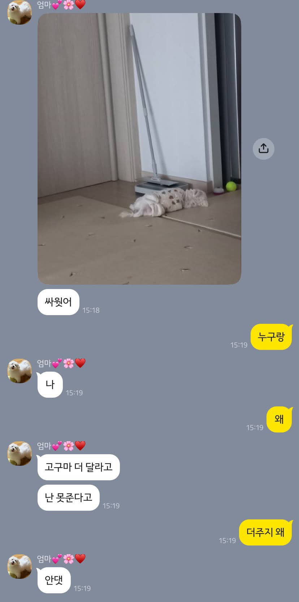
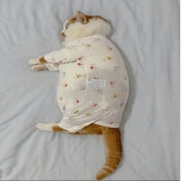

일하고 있는데 엄마한테 연락이 옴
댓글
돼지
고구마 많이 주면 똥에서 고구마 냄새나고 살짝 으깨면 고구마 그대로 나오기도 함
나도 알고싶지 않았어..
")
루왁 고구마?
맛은?
안정적이에요
으깨는건 왜 으깨봄;
햇반 토핑 사냥
글카스 씹련아
짧게사는 견생 난 치킨 족발 맛있는거 가끔 줌
댕댕이 : 뻑 예아ㅏㅏㅏㅏㅏㅏㅏㅏ
양갈비 남은거 궈주면
진심 눈 튀어나오게 커짐
너네 강아지는 널 진짜 사랑하겠다
오우 시발, 족발!
ㅇㅇ
우리도 피자 치맥 치킨이 몸에 좋아서 먹나 뭐...
애초에 안먹으면 갈망도 거의 없는데
다른 강아지들은 사람들 먹는거 너무 먹고 싶어하는 모습도 있고 한평생 사료랑 간식 쪼가리만 먹는게 안쓰럽더라구
볶음밥 먹이고 별거 다 먹여도 10년 이상은 거뜬하더라
요즘 10년이면 빨리 죽는 거야
물론 나 같아도 먹고싶은 거 다 먹고 뻘리 죽는 게 좋지만
나는 개랑 오래 살고 싶으니까 안 줄거임
우리집 푸들은 아부지가 라면이랑 허브솔트뿌린 삼겹살 후라이드 양념치킨 믹스커피까지 낭낭하게 챙겨먹였는데 진짜 푸들이 무슨 비엔나소세지처럼 살찜. 그렇게 작년 10월에 13살로 무지개다리 건너더니 올해 5월에 아부지도 따라가더라. 둘이 또 하늘나라에서 만나서 신나게 먹겠지 뭐.
나도 개키울때 맛있는거 많이줬는데 문제는 피부병때문에 병원비도 많이나감 시발ㅋㅋㅋㅋㅋ
대걸레인줄 알았네
개였다니;;
개걸레
그래서 누가 이겼는데?
